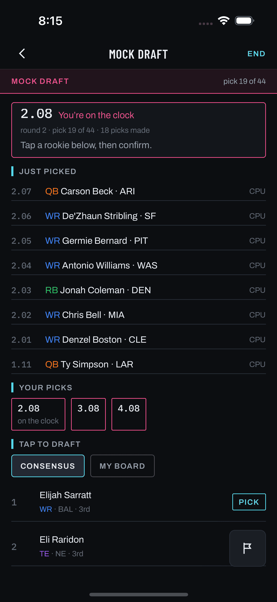

The known reality first: the shipped mock has never put a live-league user on the clock.
The session convention keeps the caller out of league.members, so owners never
contains the user, is_user never fires, and every live mock is born complete (plan §1).
Any frame on this page showing the user's turn depicts a state that has never existed in production.
About the left pane: a real capture does exist — the hermetic capture harness
(screens/manifest.json: profile draft-pre, no injections, 2026-08-11) reaches the
on-the-clock state because its seeded world reproduces the fixture shape that live sessions never have.
It is embedded per the house rule as the exact visual vocabulary of the screen, labeled for what it is:
a harness state, not shipped-live behavior.

active--on-the-clock.png), hermetic draft-pre world,
12 teams, user at slot 8, pick 19 of 44. Live users have never seen this state — the harness seed is
the only place is_user has ever been true. Every element the proposal reuses (rail, clock card,
ticker, Your-picks chips, basis chips, Pick rows) is already shipped and visually final here.teams == 12 (not 11), all 12 slots on the rail, the user's own slots in “Your picks”, the clock
stopped at 1.08, and Pick affordances live.You’re on the clock) before any tap, which #291's flow never asserted.